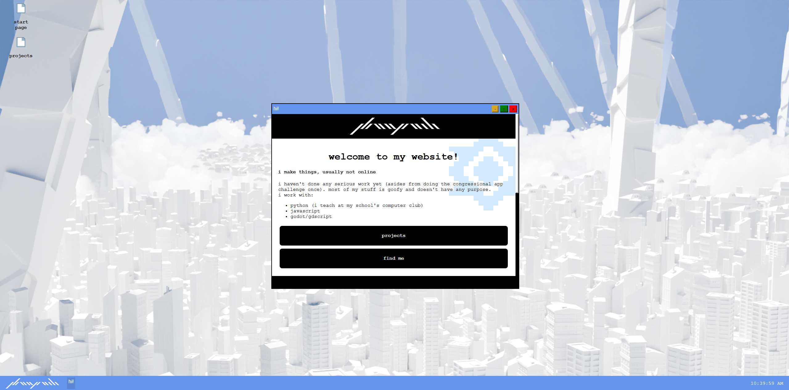
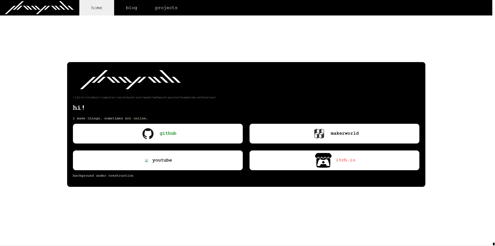

project -

i learned how to make websites in 6th grade, but i actually applied that knowledge two years later when i made the first edition of my website. i have somewhat forgotten why i did so. maybe i saw how everybody else could make simple websites and stake their claim on the wide web and i wanted to copy them. one of the reasons that i do remember is that i wanted a place to post off-topic things into the void, like in a blog. that was probably because i didn't have enough friends to yap to at the time. either way, i ended up finishing that edition of my website in september of 8th grade. it had a main page with links to my accounts & contacts, a projects page, and a blog that i eventually forgot about. it was written in pyscript because i had no clue how to use javascript.

after a while, i noticed that it felt too sanitized and corporate-ish. i wanted something more fun. the thing that pushed me over the edge was a classmate
saying that my website was boring when comparing to a NOTION TEMPLATE WEBSITE. THAT WAS LITERALLY JUST A BUNCH OF BOXES THAT LED TO SMALLER PAGES.
so i set my mind to redo it. the biggest changes are that it's formatted as a webOS now, the blog has been removed, and that more small applications
and mini tools will be added. i started work over spring break in early april as a part of
hack club's flavortown program. the base of the window system is the same as the one on my congressional app challenge submission, tweaked to fit more buttons.
the actual webOS bit was designed to look somewhat like windows 10, because that's what i've worked with the longest. i don't think i have actually
included enough operating-system-ish parts but i'll get to things like proper apps and internal editors later. it's really just a personal website after all.
one of the more interesting bits was the background for this website. i spent the better part of a weekend (like 6 hours or so of mucking around on blender) putting that together
with geometry nodes. this was my first model that i really tried to make visually appealing for a render, and i tried messing around plenty with mist passes and the compositor before
realizing that the mist pass was allergic to volumes. i still wanted a distance effect, so i just did that with a transparent plane for fake distance fog. i initially tried normal maps
for the details on the buildings to cut down on processing time, but that didn't work out the way i wanted it to. the clouds in the background were made using the easyclouds addon. i actually
got their scale wrong when adjusting the size, so i accidentally once tried rendering approximately three quadrillion miniscule clouds. i think my inspiration for the background
was actually this thumbnail for the untrimmed version of wind god girl (touhou pofv). (edit: i found the source! credit to ナイロ on pixiv). personally, i think it fits the website.
i feel proud of my little pocket of the internet.